中文
中文G. Gamow
Editor’s Notes
George Gamow here reviews advances in the theory of nuclear structure. With the discovery of the neutron, physicists now considered stable nuclei to be composed of neutrons and protons. As Gamow points out, Heisenberg’s theory of nuclear structure suggested that small nuclei should have roughly equal numbers of the two particles, and that an imbalance toward more neutrons should grow with increasing atomic mass, thereby counteracting the electrical repulsion between protons. Gamow considers the stability of nuclei to both beta and alpha decay, which could be understood only partially in current theory. The approximate proportionality of nuclear radius to the cube root of the atomic mass suggested that the density of the nucleus remains roughly constant. 中文
WHEN the complexity of atomic nuclei was proved by the existence of spontaneous and artificial nuclear transformations, a very important question arose: From which of the elementary particles are the different nuclei built up? It seemed that this question could be simply answered as there were only two particles with pretensions to be elementary: the proton and the electron. The protons had to account for the main part of the nuclear mass and the electrons had to be introduced to reduce the positive charge to the observed value. For example, the nucleus of bismuth, with atomic weight 209 and atomic number 83, was considered to be constructed from 209 protons and 209 – 83 = 126 electrons. It was also accepted as very probable that these elementary particles build up inside the nucleus certain complex units constructed from four protons and two electrons each (α-particles). All this construction was in good agreement with the experimental evidence, as electrons, protons and α-particles were really observed being emitted in nuclear transformations. 中文
The theory treating the nuclei as constructed of α-particles, some protons and a certain number of electrons, was worked out by Gamow. Although this theory gave some interesting results as to the general shape of the mass-defect curve and the conditions of emission of α-particles, it met with serious difficulties. It was very difficult to understand, on the basis of the quantum theory of the electron, how the electron can exist in a space so small as that limited by the nuclear radius. It was also not clear why the nuclear electrons, behaving in quite a strange and obscure way, do not affect the processes of emission of the heavy nuclear particles, protons and α-particles. 中文
About two years ago, it was shown by Chadwick that the experimental evidence forces us to recognise the existence of a new kind of particle, the so-called neutron, also with claims to be held to play an important rôle in nuclear structure. The discovery of neutrons considerably simplified the difficulties about electrons in nuclei. One could now suppose that the nuclei were completely constructed of neutrons and protons (for example, the nucleus of bismuth from 83 protons and 209 – 83=126 neutrons) which probably sometimes unite to form an α-particle (two neutrons and two protons). Thus the first of the above-mentioned difficulties was, so to say, hidden inside the neutron, while the second one was actually removed. 中文
On the basis of these new ideas, Heisenberg succeeded in building up a general theory of nuclear structure, accounting for the main features of nuclear stability. The basis of his theory is certain assumptions about the forces acting between neutrons and protons. It seems most rational to accept the view that the interaction between particles of the same kind is only due to electric charges (that is, no forces between two neutrons and the usual Coulomb repulsion between two protons), while between two different particles (neutron and proton) strong exchange forces come into play. These last forces are probably of the same kind as the forces between atoms playing the main rôle in quantum chemistry, and may be considered as due to the exchange of charge between the two particles in question. 中文
This hypothesis explains at once why the number of nuclear neutrons for heavy elements is considerably greater than the number of protons (that is, why the ratio of atomic weight to atomic number increases for heavier elements). In fact, if we neglect the coulomb forces, the most stable state of the nucleus will correspond to equal numbers of neutrons and protons, as in this case all the possibilities of binding (by attracting exchange forces), between protons and neutrons are saturated. The presence of the Coulomb repulsion between protons will, however, shift the optimum in the direction of a smaller number of protons and the position of lowest potential energy of our system will correspond to the larger proportion of neutrons. As the importance of the Coulomb forces increases with the nuclear charge, one can understand that an equal number of neutrons and protons is possible only for the lightest elements (first ten elements of the periodic system), while for heavier ones the number of neutrons predominates (126 neutrons and only 83 protons in bismuth). 中文
Accepting the simplest form for the law of variation of the exchange forces with distance:—
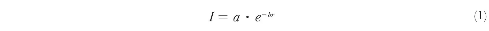
and applying the quantum statistical method, Heisenberg calculated the behaviour of the nuclear model constructed from n1 neutrons and n2 protons. The result is that the particles are rather uniformly distributed inside a certain volume proportional to the total number of particles. This result fits very well with evidence otherwise obtained, that the density inside the nucleus is rather uniform and does not depend greatly on the atomic weight. The formula obtained for the total binding energy E of the nucleus as a function of n1 and n2 looks rather complicated and depends, of course, on the numerical values of the coefficients a and b in the expression (1) for the exchange force. Comparing this formula with experimental values of the mass defects of different nuclei, one can estimate the values of a and b. One finds thus: a = 4.05 × 10–5 erg; b = 1.25 × 1012 cm.–1. 中文
Very interesting consequences can also be obtained from Heisenberg’s theory concerning the question of nuclear stability. It is easily understood that nuclei with a high positive electric charge must tend to emit positive particles. From the point of view of the energy balance, the most favourable case for such emission is the emission of an α-particle, as this removes from the nucleus a large amount of negative energy (the binding-energy of the α-particle itself), which is equivalent to the supply of an equal quantity of positive energy. The condition for the possibility of α-emission can be simply formulated if we consider it as a simultaneous subtraction of two neutrons and two protons from the nucleus in question. The work necessary for such subtraction is evidently
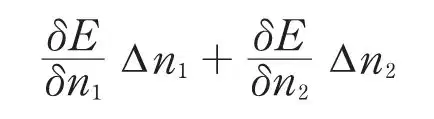
or, as ∆n1 = ∆n2 = -2,
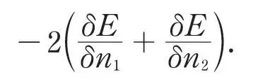
To make a spontaneous α-disintegration possible, this quantity must be smaller than the above mentioned energy-supply due to the binding energy ∆Mαc2 of the α-particle from neutrons and protons. (The difference appears as the kinetic energy of the emitted particle.) Thus the condition for α-decay will be:
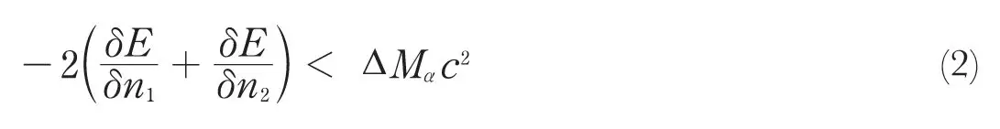
In Fig. 1, the ratio of the number of neutrons to the number of protons is plotted against the number of protons for all known isotopes. The α-stability curve as calculated from formula (2) is represented by a broken line (curve I) and one can see that it is situated too low. One notices, however, that the theoretical curve, apart from absolute values, gives a good idea of the general form of this stability limit. We may notice that the condition for the spontaneous emission of a proton:
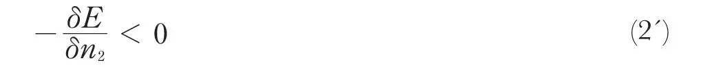
will give us a stability limit located very far to the right of the α-stability curve, which means that spontaneous proton decay could only take place for very heavily charged nuclei (atomic number > 200). On the other hand, the condition for the emission of a neutron:
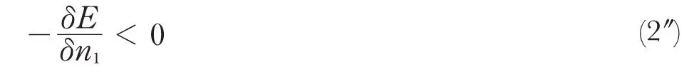
is never fulfilled, which can easily be understood if we remember that neutrons, having no charge, are not at all repelled by nuclei. 中文
We must now turn our attention to the question of the emission of light particles. From the point of view of the neutron-proton model of the nucleus, we must accept the view that the process of ordinary β-emission is due to the transformation of a nuclear neutron into a proton with the liberation of negative charge in the form of an electron:
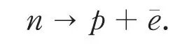
On the other hand, the recent discovery of the Joliots of elements emitting positive electrons suggests the possibility of the reverse process:
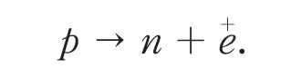
We can easily estimate the stability limits for such processes if we consider the emission of a nuclear electron as the subtraction from the nucleus of a neutron and simultaneous addition of a proton. The condition for the positive energy balance of such a transformation will evidently be:
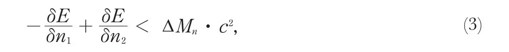
where ∆Mn is the mass defect of a neutron as constructed from a proton and an electron. In an exactly analogous way we obtain for the possibility of emission of a positive electron the condition:
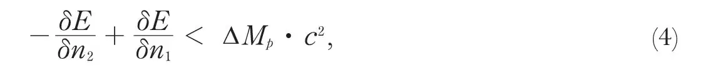
where ∆Mp is the mass defect of a proton as constructed from a neutron and a positive electron. From (3) and (4) we can conclude that the nucleus can be stable relative to electron emission only if
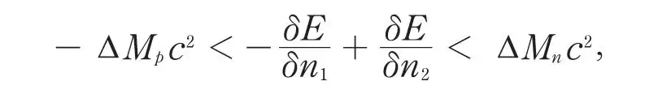
conditions which correspond in the stability diagram (Fig. 1) to a very narrow band (curves II and III)*, in contradiction with the experimental evidence. 中文
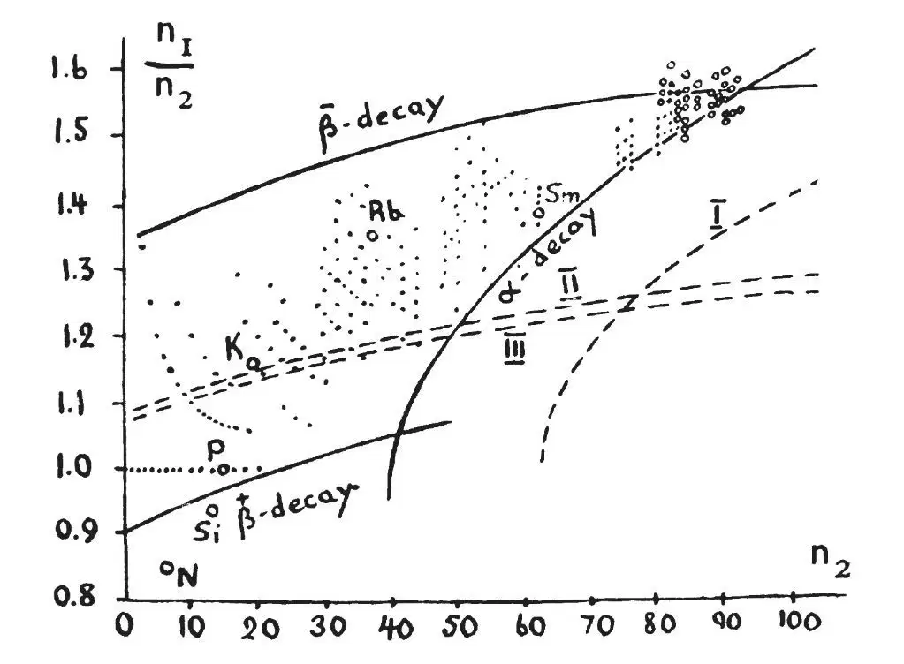
Fig. 1. A map of all known nuclei. Stable nuclei are indicated by full points, unstable nuclei by small circles. 中文
The stability region can, however, be made much broader if we consider more closely the energy conditions connected with electronic emission from nuclei. The point is that for a given total number of neutrons plus protons (that is, for given atomic weight) the nuclei are considerably more stable if the number of protons is even (even atomic number). The reason for this is that, with the increasing number of protons, each second one will lead to the formation of a new α-particle, and consequently correspond to larger liberation of energy. Thus if we plot the binding energy of isobaric nuclei against the atomic number (Fig. 2), the points corresponding to even-numbered elements will lie on a lower curve than those corresponding to the odd numbers. As can be seen from the diagram, this will have the result that for a series of elements extending some way both to the left and to the right side of the minimum, the emission of one electron (either negative or positive) will be energetically impossible. In such cases only the simultaneous emission of two electrons can be considered, but, as can be estimated from general theoretical considerations, such a double emission has extremely small probability. The possibility is not excluded that the natural β-activity of potassium and rubidium has its origin in such a double process, which would easily explain their extremely long period of life. 中文
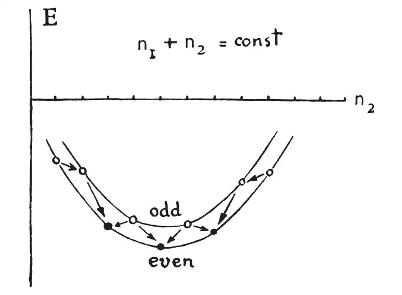
Fig. 2. Mass defect curves for typical isobaric nuclei.●, stable nuclei; ○, unstable nuclei. 中文
According to these considerations we must push the limit of
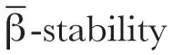
upwards and the limit of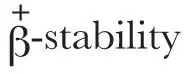
downwards, and thus get a considerably broader stability region. It can be seen from Fig. 1 that theoretical limiting curves give a good idea of the form of the actual stability limits, although, just as in the case of α-decay, the curves go again too low. It seems that both discrepancies have a common origin. 中文
In Fig. 1, the points corresponding to unstable nuclei are shown by small circles. One notices that in the region of the heavy elements, where α- and β-stability curves run rather close to one another (and possibly cross), the sequences of α-disintegrations followed by two β-disintegrations are possible. For the lighter elements only a few cases of spontaneous disintegration are at present known. Samarium (most probably its lightest isotope) emits α-particles of about 1.5 cm. range and has an average life of about 1012 years. The lightest isotopes of nitrogen, silicon and phosphorus
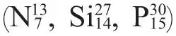
, unknown in Nature and produced artificially by the Joliots by α-bombardment of boron, magnesium and aluminium, give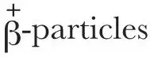
with an energy of 1–2 million volts and possess life-periods of several minutes. 中文
The
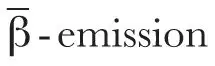
from potassium and rubidium must be explained either as a double electron emission from their heavier isotopes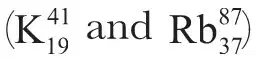
or as due to some unknown isotopes of chlorine and bromine resulting from a very short range α-emission of the above mentioned elements (probably from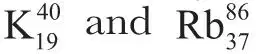
). As these ranges in air, as calculated theoretically from the value of the corresponding decay constants, are 0.24 cm. and 0.63 cm. respectively, one can understand why the α-particles have not yet been detected. Thus we see that our general theoretical considerations fit rather nicely with the experimental evidence. 中文
We now turn our attention to the details of the processes of emission of α-particles and electrons, and the connexion of the disintegration energy with the average period of life. The process of α-emission can be explained on the basis of the ordinary wave equation of Schrödinger as the velocities of the emitted α-particles are small compared with the velocity of the light. It was shown by Gamow, and independently by Gurney and Condon, that the long life of α-decaying bodies is due to the fact that the α-particle leaving a nucleus must cross a very high potential barrier, the transparency of which is extremely small and decreases very rapidly with the decrease of the energy liberated in the disintegration. Theory leads us to the following formula for the decay-constant λ as a function of the α-particle velocity v:
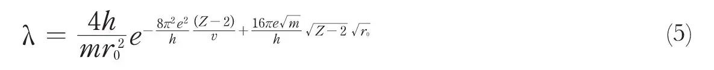
where Z is the atomic number of the disintegrating element and r0 the nuclear radius. Accepting r0 for radioactive elements to be of the order of magnitude 10–12 cm., one obtains very good agreement between the calculated and measured values of λ and can explain theoretically the empirical relation between lgλ and v found by Geiger and Nuttall. 中文
For complete agreement one must, however, accept the view that the nuclear radius r0 changes from one element to another in such way that the density of the nucleus remains constant
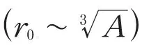
. Formula (5) permits us also to estimate one of the values λ or v if the other is measured. Thus, for example, the range of the α-particles of radium C, estimated from this formula to be equal to 4 cm., is in good agreement with the value found later by Rutherford, and the period of life of the very short lived product radium C′ given by this formula (10–3 sec.) fits well with the recent measurements of Jacobsen. 中文
It is also interesting to notice that formula (5) may be successfully applied in the region of the lighter elements. According to (5) the period of life of samarium as estimated from the velocity of its α-particles must be about 1012 years, in good agreement with the observed value. 中文
In the process of α-decay, it may often happen that the nucleus of the product of disintegration is constructed in an excited state, which corresponds to the emission of α-groups with slightly smaller energy (fine-structure of α-rays). The formula helps us to understand the relative intensities of such α-groups and also permits us to draw certain important conclusions about the quantum numbers of the different excited nuclear levels. On the other hand, it also explains the small number of so-called long-range α-groups corresponding to the disintegration of excited nuclei. 中文
In contrast with the theory of α-decay, the understanding of the process of β-disintegration presents serious difficulties. First of all, the electrons emitted in β-decay possess a continuous distribution of energy, which seems to be in contradiction with the law of conservation of energy. It was pointed out by Bohr that the law of conservation of energy need not necessarily hold for processes involving nuclear electrons for which the modern quantum theory is not applicable. But, as was shown by Landau, the rejection of the conservation law for energy will be connécted with very serious difficulties in the general gravitational theory, according to which the mass present inside a certain closed surface is entirely defined by the gravitational field on this surface. It was proposed by Pauli that one might retain the energy conservation law by the introduction of a new kind of particle called a “neutrino”. These neutrinos, having no electric charge and possessing very small (or even vanishing) mass, would be practically unobservable in all experiments and could easily take away the surplus energy of β-decay. The existence of such particles is, however, at present rather doubtful. 中文
An attempt to construct a theory of β-disintegration on the basis of Dirac’s relativistic wave equation, treating the emission of a nuclear electron in a similar way to the emission of light quanta by an atom, has recently been made by Fermi. In this theory, one accepts the view that the transformation of a nuclear neutron into a proton is connected with the creation of an electron and a neutrino, which, being born, leave the nucleus, dividing between them the energy liberated in this transformation. Accepting a definite value for the interaction energy giving rise to such transformations (of the order of magnitude of about 10–14 erg), Fermi obtains reasonable values for the decay constants of β-disintegrating elements and a good fit with the correlation curve between the decay constant and the maximum energy of the β-particles as found by Sargent. 中文
An interesting consequence of this theory, which, however, is much more general and will hold for every theory treating electron emission as the result of the transformation of a neutron into a proton, is a definite exclusion rule for β-decay. According to this rule, β-transformations in which the original nuclei and those produced possess different spins are not all permitted, and can only happen with a rather reduced probability (about a hundred times less often than transformations in which the spin does not change). This explains at once the two different curves obtained by Sargent as due to permitted and not permitted transformations. It has been shown by Gamow that the application of the above mentioned exclusion rule for β-decay to the analysis of radioactive families gives very good results and permits us to give definite spin values to normal and excited states of radioactive nuclei. 中文
(133, 744-747; 1934)
* From the equations
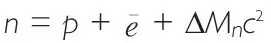
and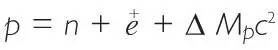
, we obtain ∆ Mnc2 – (– ∆ Mpc2) = ∆ Mnc2 + ∆ Mpc2 =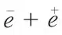
= 2mc2 = 1.6×10－6 erg. This corresponds in Fig. 1 to a breadth of the stable region of about 0.016 units along the ordinate.